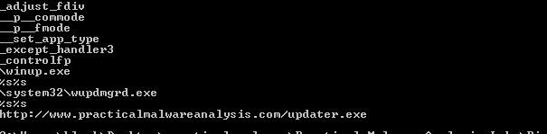

Practical Malware Analysis - Lab 1
Lab 1-1
This lab uses the files Lab01-01.exe and Lab01-01.dll. Use the tools and techniques described in the chapter to gain information about the files and answer the questions below.
Q1: Upload the files to http://www.VirusTotal.com/ and view the reports. Does either file match any existing antivirus signatures?
Uploading Lab01-01.dll 45 vendors flagged as suspicious
Uploading Lab01-01.exe 55 vendors flagged as suspicious
Q2- When were these files compiled?
Lab01-01.dll is compiled at Sun Dec 19 18:16:38 2010
Lab01-01.exe is compiled at Sun Dec 19 18:16:19 2010
Q3- Are there any indications that either of these files is packed or obfuscated? If so, what are these indicators?
Peid for Lab01-01.dll indicates no packing
Peid for Lab01-01.exe indicates no packing
Moreover both has decent number of imports
Q4- Do any imports hint at what this malware does? If so, which imports are they?
Using PsStudio to check imports on both
Lab01-01.exe imports show it creates, find and views files
Lab01-01.dll imports show it uses WS2_32.dll for creating sockets means we need to investigate the traffic, it also uses createprocess from kernel32.dll
which means investigate new process spawned
Q5- Do any imports hint at what this malware does? If so, which imports are they?
Yes, FindFirstFile and FindNextFile imports tells us that the malware searches for somefile and that it can view and modify it
Q6- What network-based indicators could be used to find this malware on infected machines?
Running strings on the dll gives us some usefull information like the ip used 127.26.152.13 we need to watch traffic coming from and to this ip
Running strings on the exe shows kerne132 (with 1 not l) we should investigate this file
Q7- What would you guess is the purpose of these files?
We noticed createprocess, sleep, exec, and socket imports are used. Which may mean it’s an agent to connect to a C&C server
Lab 1-2
Analyze the file Lab01-02.exe.
Q1- Upload the Lab01-02.exe file to http://www.VirusTotal.com/. Does it match any existing antivirus definitions?
Yes, Trojan
Q2- Are there any indications that this file is packed or obfuscated? If so, what are these indicators? If the file is packed, unpack it if possible.
Yes, Running it against Peid shows it is packed with UPX
We can unpack it with
> upx -d lab01-02.exe
Q3- Do any imports hint at this program’s functionality? If so, which imports are they and what do they tell you?
CreateService, StartService* which are used to create and start services.internetopenurl, internetopen which are used for Opening a resource specified by a complete FTP or HTTP URLGetModuleFileName which are used to obtain the fully qualified name of a module, given its handle.Q4- What host- or network-based indicators could be used to identify this malware on infected machines?
Running strings we could see it uses Internet Explorer 8.0 to connect to www.malwareanalysisbook.com
Lab 1-3
Analyze the file Lab01-03.exe.
Q1- Upload the Lab01-03.exe file to http://www.VirusTotal.com/. Does it match any existing antivirus definitions?
Yes, it flagged 64 AV as Trojan
Q2- Are there any indications that this file is packed or obfuscated? If so, what are these indicators? If the file is packed, unpack it if possible.
Running it against Peid shows it is packed with FSG 1.0 , looks like it has to be unpacked manually
Q3- Do any imports hint at this program’s functionality? If so, which imports are they and what do they tell you?
We can only see LoadLibrary and GetProcAddress imports which are used in packing
Q4- What host- or network-based indicators could be used to identify this malware on infected machines?
Can’t see any usefull strings as it is packed
Lab 1-4
Analyze the file Lab01-04.exe.
Q1- Upload the Lab01-04.exe file to http://www.VirusTotal.com/. Does it match any existing antivirus definitions?
Yes, it flagged 63 AV as Trojan
Q2- Are there any indications that this file is packed or obfuscated? If so,what are these indicators? If the file is packed, unpack it if possible.
No, it has no malformed section names , the virtualsize is close to rawsize and it has decent number of imports
Q3- When was this program compiled?
Sat Aug 31 00:26:59 2019
Q4- Do any imports hint at this program’s functionality? If so, which imports are they and what do they tell you?
It can lookup privileges and adjust privileges and open token of a process and create and control process
Q5- What host- or network-based indicators could be used to identify this malware on infected machines?
It most likely creates a file wupdmgrd.exe we should investigate it and downloades file from https://www.thepracticalmalwareanalysis.com/updater.exe
Q6- This file has one resource in the resource section. Use Resource Hacker to examine that resource, and then use it to extract the resource. What can you learn from the resource?
There was a binary exe file in the .rsrc section. Looking at imports we see it used UrlDownloadToFile to download a file from a url most likely the updater.exe